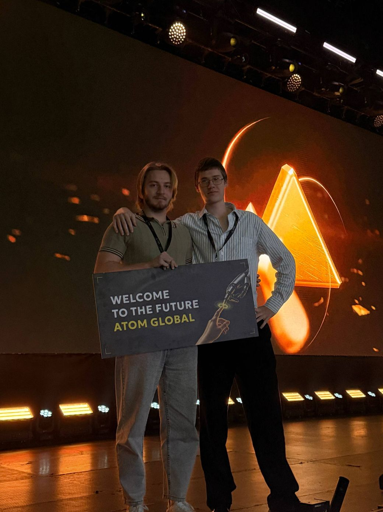
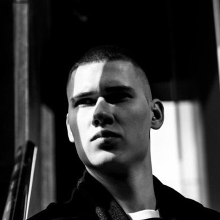

We won Europe's largest AI forum with a product we built in house
Atom Global Expo 2026 — our own tool, developed inside the studio. Not a client project and not a demo.
Tech companies we have built the websites for.
Their combined market capitalisation.
Our best result: 19× inbound leads from a client's site.

Atom Global Expo 2026 — our own tool, developed inside the studio. Not a client project and not a demo.
Ranked first by Rating Runet, the region's largest agency ranking.
All of it on high conversion websites. No juniors on client work.
Tell us what the site has to do.
info@maxout.agency
Daniel Prokopovich Founder